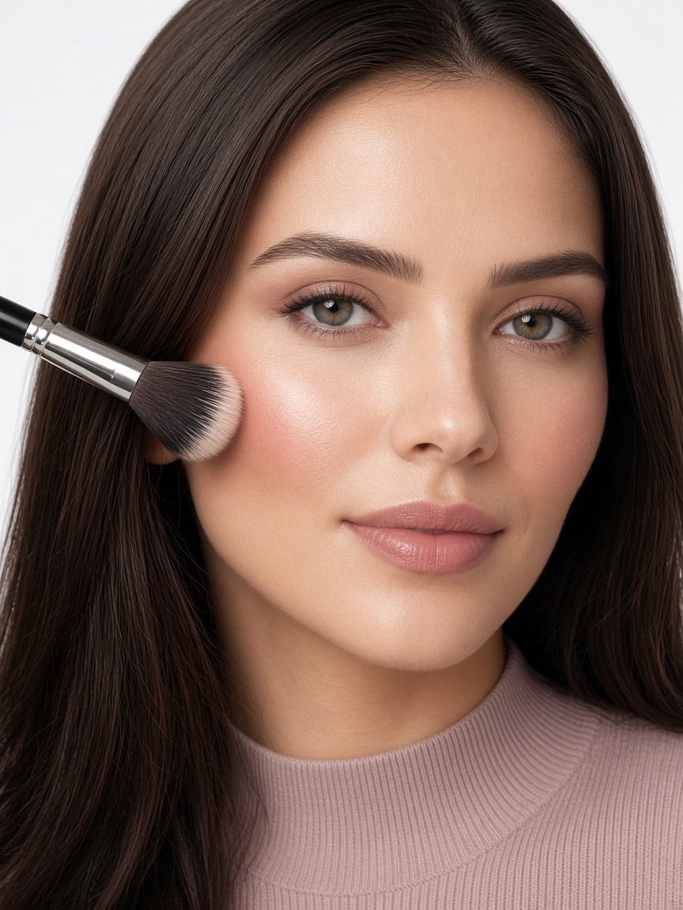
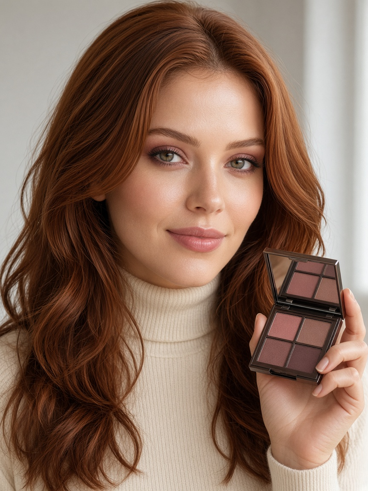

Live color
The front camera places lipstick, blush, eyeshadow, liner, and brows while you look.
A mirror for color
Try lipstick, blush, eyeshadow, liner, and brows on your own face, live. Four looks. A before-and-after swipe. Every frame stays on your device.

Tap a look, then change any shade. Intensity is yours. These are the approved portraits used in the App Store screenshots.

The front camera places lipstick, blush, eyeshadow, liner, and brows while you look.
Slide the divider. One side is the bare camera. The other is the color.
Save a look on the device, or tap the shutter to put a photo in your library.
A simple face shape and skin-tone reading suggests one look. You can change both.
Sheenlisse has no account, no ads, and no network of its own. Camera frames are used for the live preview and are not uploaded. A photo is saved only when you ask, and only to your Photos library.
TrueDepth phones use Apple’s face tracking. Other devices use Vision on the same camera image. Both stay on the device.
Read the privacy policy and the terms of use. The same text is inside the app.